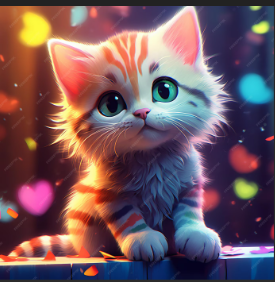

Reyan Ymer Ahmed
Ohjelmistokehittäjä

Työkokemus
Vapaaehtoinen – KotiKunnas
Aika: 07.2025 – Nykyinen
Toimin vapaaehtoisena auttamassa tapahtumissa ja tarjoamassa kevyttä asiointiapua. Tuin asiakkaita arjessa ulkoilussa, seurustelussa ja yhteisen ajan vietossa. Tehtävässä kehitin vuorovaikutustaitoja, vastuullisuutta ja yhteistyötaitoja.
Lastenhoitaja – Karhunaukion päiväkoti
Aika: Syys 2024
Avustin lapsia päivittäisissä toiminnoissa ja leikeissä 2 viikon ajan osana vuoden suomen kielen kurssia, huomioiden jokaisen lapsen yksilölliset tarpeet.
Web-kehitysprojekti (keksitty)
Aika: Kesä 2024
Suunnittelin ja toteutin harjoitusprojektina verkkosovelluksen käyttöliittymän ja lisäsin interaktiivisia toimintoja. Harjoittelu auttoi kehittämään ongelmanratkaisua, koodin jäsentelyä ja perusversion hallintaa GitHubin avulla.